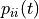
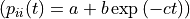
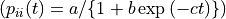

File Syntax, SEQUENCE package#
An ASCII file format is defined for each of the following object type of the STAT module:
type MARKOV#
Consider the following example of an homogeneous Markov chain:
MARKOV_CHAIN
2 STATES
ORDER 2
INITIAL_PROBABILITIES
0.8 0.2
TRANSITION_PROBABILITIES
0.6 0.4
0.1 0.9
0.3 0.7
0.2 0.8
The first line gives the object type. Then, the number of states (between 2 and 15) and the order (between 1 and 4) are defined on the two subsequent lines. On the next lines, the initial probabilities and the transition probabilities are given. Since, the initial probabilities and the transition probabilities for a given memory constitute distributions, the elements of a line should sum to one.
It is also possible to define observation (or state-dependent) probabilities if each possible output can be observed in a single state. With this restriction, the state space corresponds to a partition of the output space and the overall process is a lumped process:
OBSERVATION_PROBABILITIES
2 SPACES
SPACE 1
STATE 0
OBSERVATION 0 : 1.0
STATE 1
OBSERVATION 1 : 0.2
OBSERVATION 2 : 0.8
SPACE 2
STATE 0
OBSERVATION 0 : 0.7
OBSERVATION 1 : 0.3
STATE 1
OBSERVATION 2 : 0.6
OBSERVATION 3 : 0.4
Consider the following example of a non-homogeneous Markov chain:
NON-HOMOGENEOUS_MARKOV_CHAIN
3 STATES
ORDER 1
INITIAL_PROBABILITIES
0.5 0.3 0.2
TRANSITION_PROBABILITIES
0.6 0.2 0.2
0.1 0.8 0.1
0.2 0.1 0.7
STATE 0 HOMOGENEOUS
STATE 1 NON-HOMOGENEOUS
MONOMOLECULAR FUNCTION PARAMETER 1 : 0.99 PARAMETER 2 : -0.34 PARAMETER 3 : 0.3
STATE 2 NON-HOMOGENEOUS
LOGISTIC FUNCTION PARAMETER 1 : 0. 99 PARAMETER 2 : 2.8 PARAMETER 3 : 0.2
The first line gives the object type. Then, the initial probabilities and the transition probabilities are given in the same way as for an homogeneous Markov chain. The non-homogeneous / homogeneous character is then defined state by state. In the case of a non-homogeneous transition distribution, the function

represents the self-transition in state i as a function of the index parameter t. The corresponding transition distribution defined in the transition probability matrix gives the relative weights of the probabilities of leaving state i.For a MONOMOLECULAR function

, the following constraints apply:0 ≤ PARAMETER 1 ≤ 1
0 ≤ PARAMETER 1 + PARAMETER 2 ≤ 1
PARAMETER 3 > 0
For a MONOMOLECULAR function

, the following constraints apply:0 ≤ PARAMETER 1 ≤ 1
0 ≤ PARAMETER 1 / (1. + PARAMETER 2) ≤ 1
PARAMETER 3 > 0
SEMI-MARKOV#
A semi-Markov chain is constructed from a first-order Markov chain representing transition between distinct states and state occupancy distributions associated to the nonabsorbing states. The state occupancy distributions are defined as objects of type DISTRIBUTION with the additional constraint that the minimum time spent in a given state is at least 1 (INF_BOUND ≤ 1). Consider the following example:
SEMI-MARKOV_CHAIN
4 STATES
INITIAL_PROBABILITIES
0.8 0.2 0.0 0.0
TRANSITION_PROBABILITIES
0.0 0.6 0.4 0.0
0.0 0.0 0.7 0.3
0.0 0.2 0.0 0.8
0.0 0.0 0.0 1.0
STATE 0 OCCUPANCY_DISTRIBUTION
NEGATIVE_BINOMIAL INF_BOUND : 2 PARAMETER : 3.2 PROBABILITY : 0.4
STATE 1 OCCUPANCY_DISTRIBUTION
BINOMIAL INF_BOUND : 1 SUP_BOUND : 12 PROBABILITY : 0.6
STATE 2 OCCUPANCY_DISTRIBUTION
POISSON INF_BOUND : 1 PARAMETER : 5.4
The first line gives the object type while the second line gives the number of states (between 2 and 15). The embedded first-order Markov chain is then defined on subsequent lines by its initial probabilities and its transition probabilities (note that, unlike for the type MARKOV, the order should not be specified). Since this embedded Markov chain represents only transitions between distinct states, the self-transitions (i.e. elements of the main diagonal) should be equal to zero except in the case of absorbing states where the self-transitions are equal to one (e.g. state 3 in the above example). The state occupancy distributions are then defined for each nonabsorbing state according to the syntactic form defined for the type DISTRIBUTION with the additional constraint that time spent in a given state is at least 1 (INF_BOUND ≤ 1). Like for the type MARKOV, observation (or state-dependent) probabilities can be defined in order to specify a lumped process (with the restriction that each possible output can be observed in a single state).
Note that absorbing states such as state 3 are by nature Markovian. It is also possible to define nonabsorbing Markovian states such as state 2 . In this case, the resulting model is a hybrid hidden Markov/semi–Markov chain.
SEQUENCES#
The syntactic form of the type SEQUENCES is constituted of a header giving the number and the type of variables and of the sequence. Consider the following example of univariate sequences:
1 VARIABLE
VARIABLE 1 : STATE
1 0 0 0 1 1 2 0 2 2 2 1 1 0 1 0 1 1 1 1 0 1 1 1 \
0 1 2 2 2 1
0 0 0 1 1 0 2 0 2 2 2 1 1 1 1 0 1 0 0 0 0 0
The type STATE is the generic type. The character ‘' enables to continue a sequence on the following line.
Consider the following example of multivariate sequences:
2 VARIABLES
VARIABLE 1 : STATE
VARIABLE 2 : STATE
1 0 | 0 0 | 1 0 | 2 0 | 2 1 | 2 1 | 1 0 | 1 0 | 1 0 | 0 1 | 0 1 | 1 1 \
0 1 | 2 0 | 2 1
0 0 | 0 0 | 1 0 | 2 0 | 2 1 | 1 1 | 1 0 | 1 0 | 0 0 | 0 0
The character ‘|’ enables to separate successive vectors.
Consider the following example of sequences with an explicit index parameter of type POSITION:
2 VARIABLES
VARIABLE 1 : POSITION
VARIABLE 2 : STATE
10 1 | 12 0 | 13 1 | 14 2 | 15 2 | 20 2 | 22 1 | 23 1 | 27 1 | 30 0 | 31 0 | 32 1 \
35 1 | 37 0 | 40 1 | 45
5 0 | 7 0 | 10 0 | 11 0 | 15 1 | 18 1 | 20 0 | 21 0 | 22 0 | 25 0 | 25
This explicit index parameter is given as a first variable and the other variables (at least one) should be of type STATE. The index values should be increasing along sequences and the sequence ends with a final index value.
The explicit index parameter of type POSITION can be replaced by inter-position intervals:
2 VARIABLES
VARIABLE 1 : POSITION_INTERVAL
VARIABLE 2 : STATE
10 1 | 2 0 | 1 1 | 1 2 | 1 2 | 5 2 | 2 1 | 1 1 | 4 1 | 3 0 | 1 0 | 1 1 \
3 1 | 2 0 | 3 1 | 5
5 0 | 2 0 | 3 0 | 1 0 | 4 1 | 3 1 | 2 0 | 1 0 | 1 0 | 3 0 | 0
Consider the following example of sequences with an explicit index parameter of type TIME:
2 VARIABLES
VARIABLE 1 : TIME
VARIABLE 2 : STATE
3 1 | 7 4 | 10 8 | 14 10 | 18 15 | 21 16 | 25 18 | 28 19 | 31 20 | 35 22 | 39 23 | 42 24 \
45 25 | 49 25
3 1 | 7 2 | 10 6 | 14 9 | 18 13 | 21 14 | 25 15 | 28 16 | 31 17 | 35 17
The only difference with the explicit index parameter of type POSITION is that the index values should be strictly increasing along sequences and that no final index value is required.
The explicit index parameter of type TIME can be replaced by time intervals:
2 VARIABLES
VARIABLE 1 : TIME_INTERVAL
VARIABLE 2 : STATE
3 1 | 4 4 | 3 8 | 4 10 | 4 15 | 3 16 | 4 18 | 3 19 | 3 20 | 4 22 | 4 23 | 3 24 \
3 25 | 4 25
3 1 | 4 2 | 3 6 | 4 9 | 4 13 | 3 14 | 4 15 | 3 16 | 3 17 | 4 17
TIME_EVENTS#
The syntactic form of data of type {time interval between two observation dates, number of events occurring between these two observation dates} consists in giving, in a first column, the time interval between two observation dates (length of the observation period), in a second column, the number of events occurring between these two observation dates and, in a third column, the corresponding frequency. The time interval between two observation dates should be given in increasing order and then, for each possible time interval, the number of events should be given in increasing order. This is equivalent of giving successively the frequency distribution of the number of events for each possible time interval between two observation dates, ranked in increasing order.
# frequency distribution of the number of events for an observation period of length 20
20 2 1
20 3 2
20 4 4
20 5 12
20 6 14
20 7 6
20 8 2
20 9 1
#frequency distribution of the number of events for an observation period of length 30
30 3 1
30 5 2
30 6 4
30 7 12
30 8 14
30 9 6
30 10 2
30 12 1
TOPS#
Consider the following example:
2 VARIABLES
VARIABLE 1 : POSITION
VARIABLE 2 : NB_INTERNODE
10 5 | 12 5 | 13 6 | 13 8 | 15 7 | 20 10 | 22 11 | 23 11 | 27 15 | 30 16 | 31 15 | 32 17 \
35 16 | 37 18 | 40 19 | 45
5 2 | 7 4 | 10 5 | 11 6 | 15 7 | 18 8 | 20 9 | 21 11 | 22 11 | 25 12 | 25
The syntactic form of the type TOPS is a variant of the syntactic form of the type SEQUENCES. ‘Tops’ can be seen as sequences with an explicit index parameter of type POSITION. This index parameter represents the position of successive offspring shoots along the parent shoot and a final index value gives the number of internodes of the parent shoot. The second variable of type NB_INTERNODE gives the number of internodes of the offspring shoots.
The explicit index parameter of type POSITION can be replaced by inter-position intervals:
2 VARIABLES
VARIABLE 1 : POSITION_INTERVAL
VARIABLE 2 : NB_INTERNODE
10 5 | 2 5 | 1 6 | 0 8 | 2 7 | 5 10 | 2 11 | 1 11 | 4 15 | 3 16 | 1 15 | 1 17 \
3 16 | 2 18 | 3 19 | 5
5 2 | 2 4 | 3 5 | 1 6 | 4 7 | 3 8 | 2 9 | 1 11 | 1 11 | 3 12 | 0
TOP_PARAMETERS#
A model of ‘tops’ is defined by three parameters, namely the growth probability of the parent shoot, the growth probability of the offspring shoots (both in the sense of Bernoulli processes) and the growth rhythm ratio offspring shoots / parent shoot. Consider the following example:
TOP_PARAMETERS
PROBABILITY : 0.7
AXILLARY_PROBABILITY : 0.6
RHYTHM_RATIO : 0.8
The following constraints apply to the parameters:
0.05 ≤ PROBABILITY ≤ 1
0.05 ≤ AXILLARY_PROBABILITY ≤ 1
1/3 ≤ RHYTHM_RATIO ≤ 3